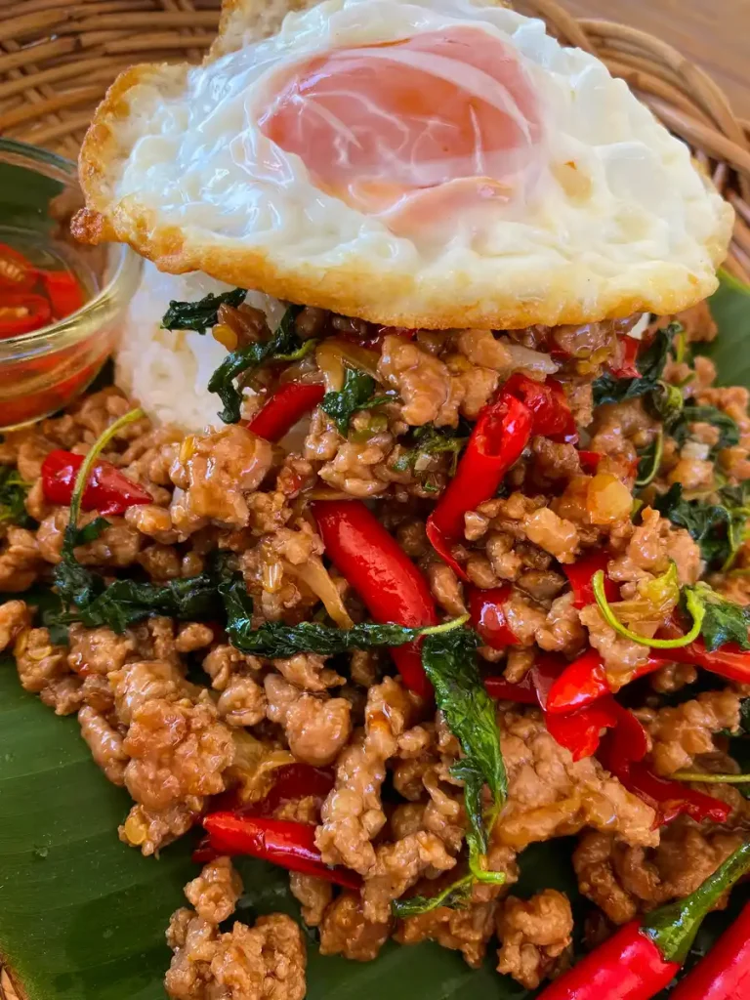

Pad Krapao

Description
Pad kra pao, a staple in Thai cuisine, is a spicy and savory stir-fry dish featuring ground meat and holy basil.
It offers an aromatic blend of spicy, sweet, and garlicky flavors. Typically served over rice with a crispy fried egg,
it's the go-to street food option in Thailand.
Ingredients
- Ground pork
- Thai holy basil
- Flavor seasoning (RosDee)
- Oyster sauce
- Light soy sauce
- Fish sauce
- Chilies
- Garlic
- White sugar
- Egg
Steps
- Roughly crush the garlic and chilies using a mortar and pestle.
- Heat oil over medium-high heat in a wok pan or skillet.
Add the crushed chili-garlic paste, stir-fry for 20 seconds,
or until the garlic turns golden and the paste becomes fragrant.
- Toss in ground pork and break up any clumps. If you’re comfortable with it,
cook over high heat, stirring continuously until the meat is fully cooked through
which typically takes about 2-3 minutes.
- Add oyster sauce, fish sauce, white sugar, light soy sauce,
and flavor seasoning. Continue stir-frying until sugar is dissolved
and sauces are well mixed.
- Turn off the heat and toss in holy basil, gently mix and serve.